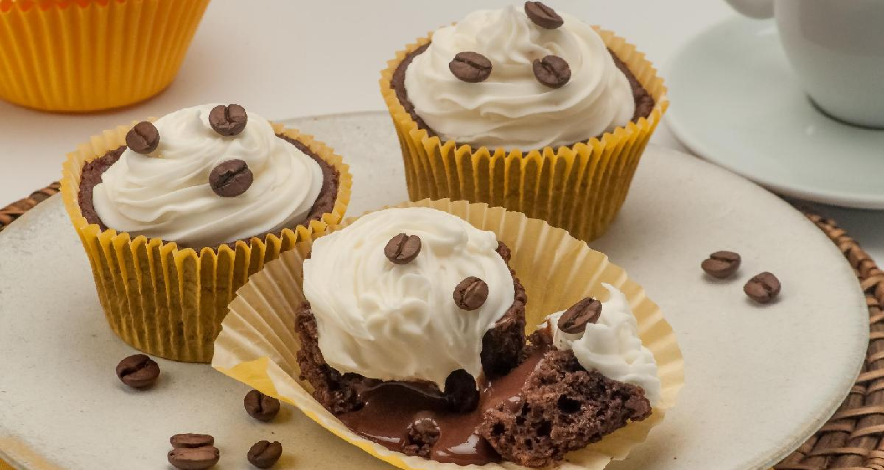

Cupcake de café com chantilly
O bolinho perfeito para acompanhar o café de todos os dias. É muito fácil e ainda por cima fica maravilhoso, com certeza vai impressionar. Faz e depois me conta o que achou!
- Tempo: 1h10
- Rendimento: 12 porções
- Dificuldade: fácil
Ingredientes
- 1 e 1/2 xícara (chá) de água morna
- 1 colher (sopa) de café solúvel
- 3 ovos
- 1/2 xícara (chá) de óleo
- 2 xícaras (chá) de açúcar
- 2/3 de xícara (chá) de chocolate em pó
- 2 e 1/2 xícaras (chá) de farinha de trigo
- 1 colher (sopa) de fermento em pó químico
- 2 xícaras (chá) de chantilly pronto
- Grãos de café para decorar
- 1 lata de leite condensado
- 1 colher (sopa) de café solúvel
- 1 colher (sopa) de chocolate em pó
- 2 colheres (sopa) de manteiga
Modo de preparo
No liquidificador, bata a água, o café solúvel, os ovos, o óleo, o açúcar e o chocolate em pó até ficar homogêneo. Transfira para uma tigela, adicione a farinha e o fermento e misture com uma colher. Despeje em forminhas para cupcakes forradas com forminhas de papel e coloque em uma fôrma grande, um ao lado do outro. Leve ao forno médio, preaquecido, por 25 minutos ou até assar e dourar. Retire e deixe esfriar.
Para o recheio, leve todos os ingredientes ao fogo médio, mexendo bem até engrossar. Desligue, deixe esfriar e coloque dentro de um saco de confeiteiro com bico perle. Reserve. Coloque o chantilly dentro de um saco de confeiteiro com bico pitanga e reserve.
Para a montagem, faça um furo no centro dos cupcakes e recheie com o brigadeiro de café reservado. Decore as superfícies dos cupcakes com o chantilly reservado, fazendo círculos. Decore com grãos de café e leve à geladeira até o momento de servir.